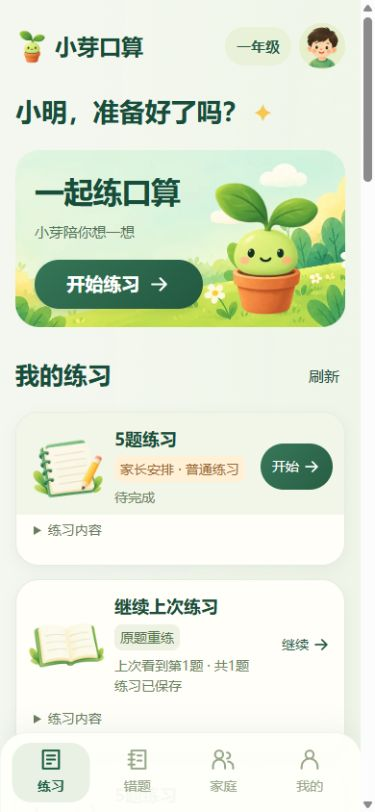
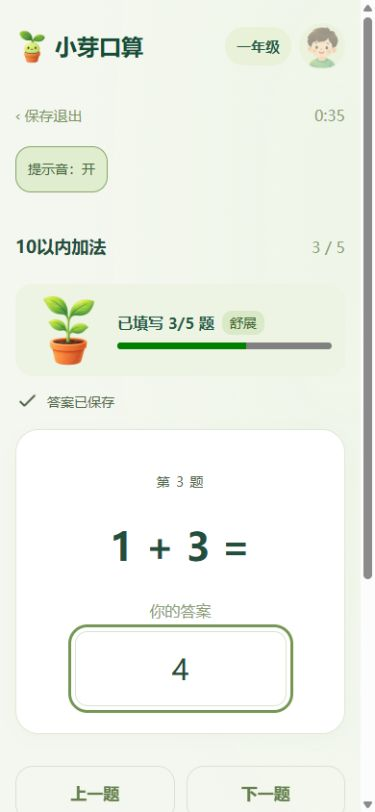
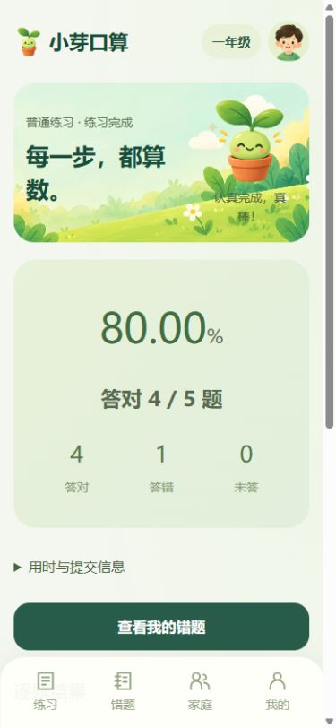
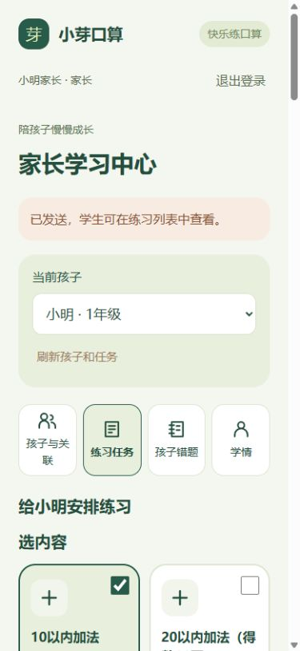
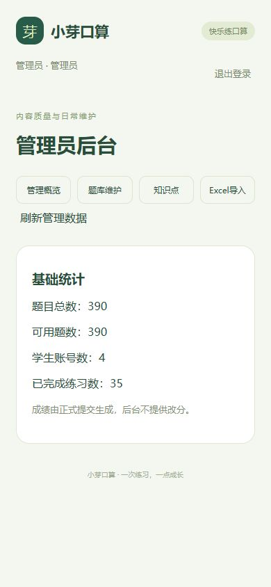

学生练习
单知识点或多知识点精确分配题量，作答、保存恢复、提交判分、结果及错题再练。
Android首发 · P3互动界面
为基础口算练习设计的小芽口算。学生自主练习、保存后继续、查看结果和错题；家长配置并发送练习，管理员维护题库。
获取软件与评估方法390道体验题 · 11个知识点 · 一至三年级基础整数口算样例

单知识点或多知识点精确分配题量，作答、保存恢复、提交判分、结果及错题再练。
关联孩子、固定预览后发题、查看结果和已有学情；未开始的任务可以撤回。
分类维护、题目审核启停、错误版本处置，以及Excel整批校验导入。
以下是已有工程检查截图，截图不等于真实用户试用记录。




成长表示本次已填写数量；声音默认关闭。当前答案限非负整数，除法仅整除。题库是体验样例，不代表教材全覆盖；没有长期养成、积分或排行榜。
ui-p3-v1 · 约7.4 MiB · 课程调试体验包，未上架应用商店。
运行条件：该APK依赖Java后端和MySQL；当前冻结版连接设备自己的localhost:18443，不能在任意手机下载安装后直接联网使用。静态介绍网站本身不提供业务后端。
请在发布验收前写明同学如何访问可用环境、评估时间/地点、现场协助人或可用业务网址，以及演示账号取得方式。不要填写localhost或本机文件路径作为其他同学的访问地址。
目前评估方式未落实，不应宣称已完成交叉评估准备。
业务范围S01，界面P3。学生本人完整学情S02本次取消；家长已有学情保留。现有软件和资料由团队继续维护。
发布信息：发布日期 2026-11-02；本站与获取文件至少保留至 2026-12-31（不少于发布后一个日历月）；维护负责人：郑凯彬；问题反馈：课程仓库 Issue 或课程小组群。